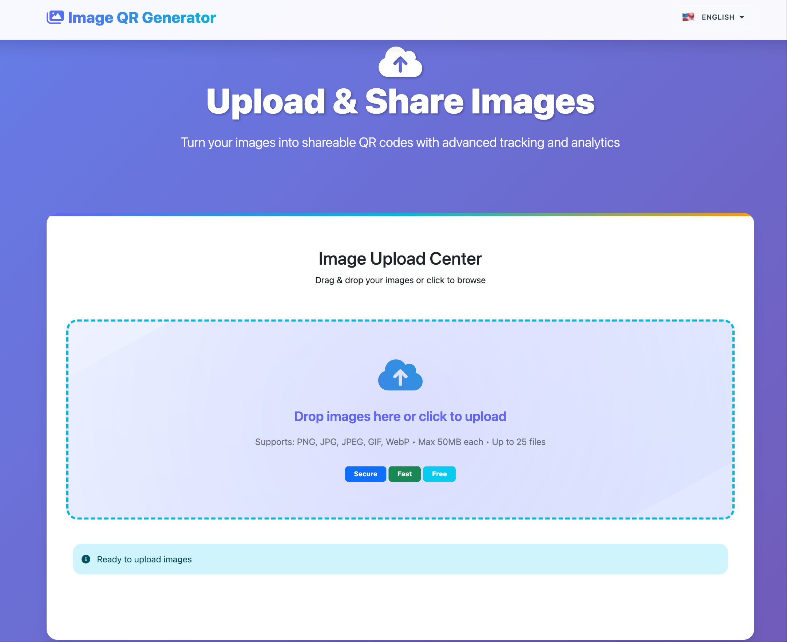
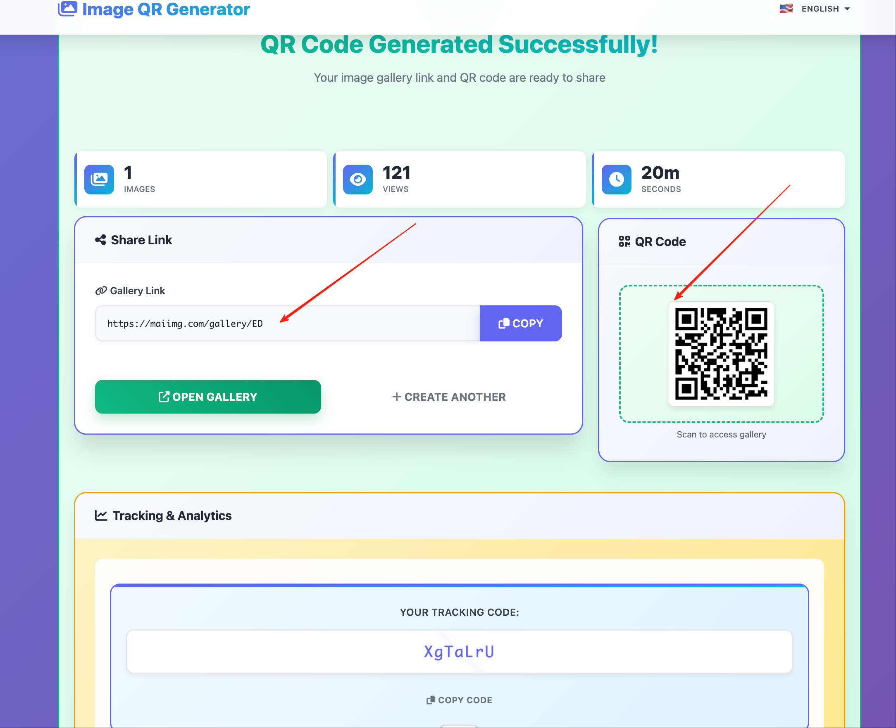
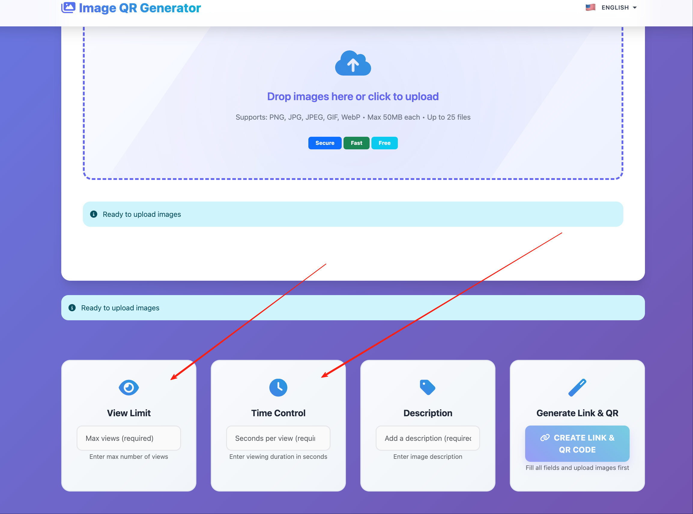

How to Share Product Photos with Customers Fast
When customers ask for details, speed matters. Send one clean photo set instead of multiple rounds.
Interface snapshots

Where time gets lost
Back-and-forth messages
You keep sending extra angles one by one.
You keep sending extra angles one by one.
Scattered versions
Different chats have different files.
Different chats have different files.
Hard to reuse
No single link for repeated requests.
No single link for repeated requests.
No clean closeout
Promotional images stay active too long.
Promotional images stay active too long.
Fast workflow
- Prepare one set (max 25 photos).
- Create one share link.
- Use the same link in WhatsApp/Facebook replies.
- Create QR for store print materials.
- Set expiry for campaign photos.